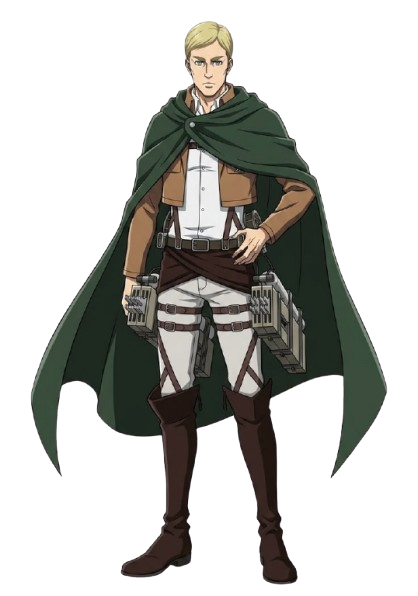

Erwin Smith is the commander of the Survey Corps and one of humanity's most respected military leaders. Renowned for his intelligence, charisma, and tactical brilliance, he inspires those under his command through his unwavering resolve and willingness to face extraordinary risks in pursuit of humanity's future.
While he cared deeply for his men, he did not hesitate to sacrifice them for the good and prosperity of mankind, and his men have proven more than willing to stake their lives at his order. Erwin developed the Long-Distance Enemy Scouting Formation.
| Japanese Name | エルヴィン・スミス |
|---|---|
| Affiliation | Survey Corps |
| Rank | Commander |
| Occupation | Commander |
| Height | 188 cm |
| First Appearance | Episode 4 |